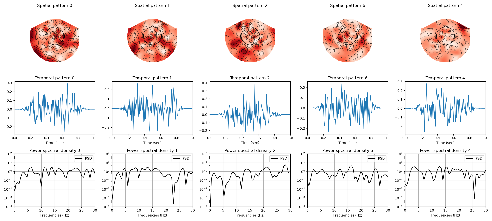
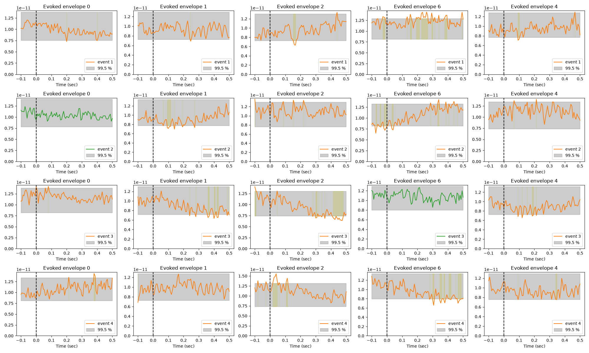
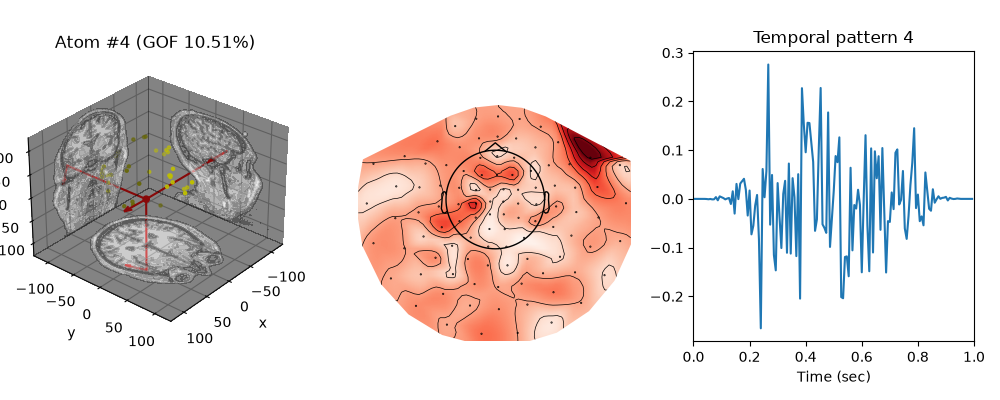

Note
Go to the end to download the full example code.
Extracting artifact and evoked response atoms from the sample dataset#
This example illustrates how to learn rank-1 [1] atoms on the multivariate
sample dataset from mne. We display a selection of atoms, featuring
heartbeat and eyeblink artifacts, two atoms of evoked responses, and a
non-sinusoidal oscillation.
# Authors: Thomas Moreau <thomas.moreau@inria.fr>
# Mainak Jas <mainak.jas@telecom-paristech.fr>
# Tom Dupre La Tour <tom.duprelatour@telecom-paristech.fr>
# Alexandre Gramfort <alexandre.gramfort@telecom-paristech.fr>
#
# License: BSD (3-clause)
Let us first define the parameters of our model.
# Sampling frequency the signal will be resampled to
sfreq = 150.
# Define the shape of the dictionary
n_atoms = 40
n_times_atom = int(round(sfreq * 1.0)) # 1000. ms
# Regularization parameter which control sparsity
reg = 0.1
# Number of processors for parallel computing
n_jobs = 5
# To accelerate the run time of this example, we split the signal in n_slits.
# The number of splits should actually be the smallest possible to avoid
# introducing border artifacts in the learned atoms and it should be not much
# larger than n_jobs.
n_splits = 10
Next, we define the parameters for multivariate CSC
from alphacsc import GreedyCDL
cdl = GreedyCDL(
# Shape of the dictionary
n_atoms=n_atoms,
n_times_atom=n_times_atom,
# Request a rank1 dictionary with unit norm temporal and spatial maps
rank1=True,
uv_constraint='separate',
# apply a temporal window reparametrization
window=True,
# at the end, refit the activations with fixed support and no reg to unbias
unbiased_z_hat=True,
# Initialize the dictionary with random chunk from the data
D_init='chunk',
# rescale the regularization parameter to be a percentage of lambda_max
lmbd_max="scaled",
reg=reg,
# Number of iteration for the alternate minimization and cvg threshold
n_iter=100,
eps=1e-4,
# solver for the z-step
solver_z="lgcd",
solver_z_kwargs={'tol': 1e-2,
'max_iter': 10000},
# solver for the d-step
solver_d='alternate_adaptive',
solver_d_kwargs={'max_iter': 300},
# sort atoms by explained variances
sort_atoms=True,
# Technical parameters
verbose=1,
random_state=0,
n_jobs=n_jobs)
Load the sample data from MNE-python and select the gradiometer channels. The MNE sample data contains MEG recordings of a subject with visual and auditory stimuli. We load the data using utilities from MNE-python as a Raw object and select the gradiometers from the signal.
import os
import mne
import numpy as np
print("Loading the data...", end=' ', flush=True)
data_path = mne.datasets.sample.data_path()
data_dir = os.path.join(data_path, 'MEG', 'sample')
file_name = os.path.join(data_dir, 'sample_audvis_raw.fif')
raw = mne.io.read_raw_fif(file_name, preload=True, verbose=False)
raw.pick(picks=['grad', 'stim'])
print('done')
Loading the data... Using default location ~/mne_data for sample...
Creating /github/home/mne_data
Fetching 1 file for the sample dataset ...
Downloading file 'MNE-sample-data-processed.tar.gz' from 'https://osf.io/download/86qa2?version=6' to '/github/home/mne_data'.
0%| | 0.00/1.65G [00:00<?, ?B/s]
0%| | 2.93M/1.65G [00:00<00:56, 29.3MB/s]
1%|▏ | 9.84M/1.65G [00:00<00:31, 52.7MB/s]
1%|▍ | 16.9M/1.65G [00:00<00:26, 60.7MB/s]
1%|▌ | 23.8M/1.65G [00:00<00:25, 64.0MB/s]
2%|▋ | 30.7M/1.65G [00:00<00:24, 65.8MB/s]
2%|▊ | 37.6M/1.65G [00:00<00:24, 66.9MB/s]
3%|▉ | 44.4M/1.65G [00:00<00:23, 67.2MB/s]
3%|█▏ | 51.3M/1.65G [00:00<00:23, 67.8MB/s]
4%|█▎ | 58.1M/1.65G [00:00<00:23, 68.0MB/s]
4%|█▍ | 65.1M/1.65G [00:01<00:23, 68.7MB/s]
4%|█▌ | 72.1M/1.65G [00:01<00:22, 69.0MB/s]
5%|█▊ | 79.2M/1.65G [00:01<00:22, 69.5MB/s]
5%|█▉ | 86.3M/1.65G [00:01<00:22, 70.0MB/s]
6%|██ | 93.6M/1.65G [00:01<00:21, 71.0MB/s]
6%|██▎ | 101M/1.65G [00:01<00:21, 71.4MB/s]
7%|██▍ | 108M/1.65G [00:01<00:21, 71.9MB/s]
7%|██▋ | 116M/1.65G [00:01<00:21, 72.4MB/s]
7%|██▊ | 123M/1.65G [00:01<00:21, 72.4MB/s]
8%|██▉ | 130M/1.65G [00:01<00:20, 72.8MB/s]
8%|███▏ | 138M/1.65G [00:02<00:20, 73.4MB/s]
9%|███▎ | 145M/1.65G [00:02<00:20, 73.7MB/s]
9%|███▌ | 152M/1.65G [00:02<00:20, 73.7MB/s]
10%|███▋ | 160M/1.65G [00:02<00:20, 74.2MB/s]
10%|███▊ | 168M/1.65G [00:02<00:19, 74.6MB/s]
11%|████ | 175M/1.65G [00:02<00:19, 74.6MB/s]
11%|████▏ | 182M/1.65G [00:02<00:19, 74.5MB/s]
11%|████▎ | 190M/1.65G [00:02<00:19, 74.9MB/s]
12%|████▌ | 198M/1.65G [00:02<00:19, 75.0MB/s]
12%|████▋ | 205M/1.65G [00:02<00:19, 74.9MB/s]
13%|████▉ | 213M/1.65G [00:03<00:18, 76.4MB/s]
13%|█████ | 221M/1.65G [00:03<00:18, 77.7MB/s]
14%|█████▎ | 229M/1.65G [00:03<00:18, 79.0MB/s]
14%|█████▍ | 238M/1.65G [00:03<00:17, 80.2MB/s]
15%|█████▋ | 246M/1.65G [00:03<00:17, 80.6MB/s]
15%|█████▊ | 254M/1.65G [00:03<00:17, 81.1MB/s]
16%|██████ | 262M/1.65G [00:03<00:17, 81.7MB/s]
16%|██████▏ | 271M/1.65G [00:03<00:16, 81.9MB/s]
17%|██████▍ | 279M/1.65G [00:03<00:16, 82.1MB/s]
17%|██████▌ | 287M/1.65G [00:03<00:16, 82.3MB/s]
18%|██████▊ | 295M/1.65G [00:04<00:16, 80.6MB/s]
18%|██████▉ | 303M/1.65G [00:04<00:17, 78.3MB/s]
19%|███████▏ | 311M/1.65G [00:04<00:17, 77.6MB/s]
19%|███████▎ | 319M/1.65G [00:04<00:17, 75.6MB/s]
20%|███████▌ | 327M/1.65G [00:04<00:17, 77.7MB/s]
20%|███████▋ | 336M/1.65G [00:04<00:16, 79.0MB/s]
21%|███████▉ | 344M/1.65G [00:04<00:16, 79.9MB/s]
21%|████████ | 352M/1.65G [00:04<00:16, 80.9MB/s]
22%|████████▎ | 360M/1.65G [00:04<00:15, 81.2MB/s]
22%|████████▍ | 368M/1.65G [00:04<00:15, 80.9MB/s]
23%|████████▋ | 376M/1.65G [00:05<00:15, 81.0MB/s]
23%|████████▊ | 385M/1.65G [00:05<00:15, 81.5MB/s]
24%|█████████ | 393M/1.65G [00:05<00:15, 81.8MB/s]
24%|█████████▏ | 401M/1.65G [00:05<00:15, 81.8MB/s]
25%|█████████▍ | 409M/1.65G [00:05<00:15, 81.9MB/s]
25%|█████████▌ | 418M/1.65G [00:05<00:15, 81.8MB/s]
26%|█████████▊ | 426M/1.65G [00:05<00:14, 81.8MB/s]
26%|█████████▉ | 434M/1.65G [00:05<00:14, 82.0MB/s]
27%|██████████▏ | 442M/1.65G [00:05<00:14, 81.9MB/s]
27%|██████████▎ | 450M/1.65G [00:05<00:14, 81.9MB/s]
28%|██████████▌ | 459M/1.65G [00:06<00:14, 82.1MB/s]
28%|██████████▋ | 467M/1.65G [00:06<00:14, 82.4MB/s]
29%|██████████▉ | 475M/1.65G [00:06<00:15, 76.7MB/s]
29%|███████████ | 483M/1.65G [00:06<00:17, 67.6MB/s]
30%|███████████▎ | 491M/1.65G [00:06<00:16, 71.6MB/s]
30%|███████████▍ | 499M/1.65G [00:06<00:15, 74.3MB/s]
31%|███████████▋ | 508M/1.65G [00:06<00:14, 76.6MB/s]
31%|███████████▊ | 516M/1.65G [00:06<00:14, 78.5MB/s]
32%|████████████ | 524M/1.65G [00:06<00:14, 79.6MB/s]
32%|████████████▏ | 532M/1.65G [00:07<00:13, 80.1MB/s]
33%|████████████▍ | 541M/1.65G [00:07<00:13, 80.8MB/s]
33%|████████████▌ | 549M/1.65G [00:07<00:13, 81.4MB/s]
34%|████████████▊ | 557M/1.65G [00:07<00:13, 81.8MB/s]
34%|█████████████ | 565M/1.65G [00:07<00:13, 82.2MB/s]
35%|█████████████▏ | 574M/1.65G [00:07<00:13, 82.2MB/s]
35%|█████████████▍ | 582M/1.65G [00:07<00:13, 82.1MB/s]
36%|█████████████▌ | 590M/1.65G [00:07<00:12, 82.1MB/s]
36%|█████████████▊ | 598M/1.65G [00:07<00:12, 82.2MB/s]
37%|█████████████▉ | 607M/1.65G [00:07<00:12, 81.8MB/s]
37%|██████████████▏ | 615M/1.65G [00:08<00:12, 80.7MB/s]
38%|██████████████▎ | 623M/1.65G [00:08<00:12, 80.7MB/s]
38%|██████████████▌ | 631M/1.65G [00:08<00:12, 81.3MB/s]
39%|██████████████▋ | 639M/1.65G [00:08<00:12, 81.7MB/s]
39%|██████████████▉ | 648M/1.65G [00:08<00:12, 82.0MB/s]
40%|███████████████ | 656M/1.65G [00:08<00:12, 81.9MB/s]
40%|███████████████▎ | 664M/1.65G [00:08<00:12, 82.1MB/s]
41%|███████████████▍ | 672M/1.65G [00:08<00:11, 82.0MB/s]
41%|███████████████▋ | 681M/1.65G [00:08<00:11, 81.8MB/s]
42%|███████████████▊ | 689M/1.65G [00:08<00:11, 81.9MB/s]
42%|████████████████ | 697M/1.65G [00:09<00:11, 81.1MB/s]
43%|████████████████▏ | 705M/1.65G [00:09<00:11, 79.3MB/s]
43%|████████████████▍ | 713M/1.65G [00:09<00:12, 78.1MB/s]
44%|████████████████▌ | 721M/1.65G [00:09<00:12, 76.9MB/s]
44%|████████████████▋ | 729M/1.65G [00:09<00:12, 76.3MB/s]
45%|████████████████▉ | 736M/1.65G [00:09<00:12, 72.4MB/s]
45%|█████████████████ | 743M/1.65G [00:09<00:13, 67.9MB/s]
45%|█████████████████▎ | 751M/1.65G [00:09<00:12, 69.7MB/s]
46%|█████████████████▍ | 758M/1.65G [00:09<00:12, 70.9MB/s]
46%|█████████████████▌ | 766M/1.65G [00:09<00:12, 71.9MB/s]
47%|█████████████████▊ | 773M/1.65G [00:10<00:12, 72.5MB/s]
47%|█████████████████▉ | 781M/1.65G [00:10<00:11, 73.0MB/s]
48%|██████████████████▏ | 789M/1.65G [00:10<00:11, 75.9MB/s]
48%|██████████████████▎ | 797M/1.65G [00:10<00:10, 77.8MB/s]
49%|██████████████████▌ | 805M/1.65G [00:10<00:10, 79.2MB/s]
49%|██████████████████▋ | 813M/1.65G [00:10<00:10, 79.1MB/s]
50%|██████████████████▉ | 821M/1.65G [00:10<00:10, 80.2MB/s]
50%|███████████████████ | 830M/1.65G [00:10<00:10, 81.1MB/s]
51%|███████████████████▎ | 838M/1.65G [00:10<00:10, 81.4MB/s]
51%|███████████████████▍ | 846M/1.65G [00:10<00:09, 81.1MB/s]
52%|███████████████████▋ | 854M/1.65G [00:11<00:09, 81.6MB/s]
52%|███████████████████▊ | 863M/1.65G [00:11<00:09, 82.3MB/s]
53%|████████████████████ | 871M/1.65G [00:11<00:09, 82.4MB/s]
53%|████████████████████▏ | 879M/1.65G [00:11<00:09, 82.2MB/s]
54%|████████████████████▍ | 888M/1.65G [00:11<00:09, 82.5MB/s]
54%|████████████████████▌ | 896M/1.65G [00:11<00:09, 82.4MB/s]
55%|████████████████████▊ | 904M/1.65G [00:11<00:09, 82.4MB/s]
55%|████████████████████▉ | 912M/1.65G [00:11<00:09, 81.0MB/s]
56%|█████████████████████▏ | 921M/1.65G [00:11<00:10, 71.4MB/s]
56%|█████████████████████▎ | 928M/1.65G [00:12<00:10, 71.9MB/s]
57%|█████████████████████▌ | 936M/1.65G [00:12<00:09, 75.0MB/s]
57%|█████████████████████▋ | 944M/1.65G [00:12<00:09, 76.9MB/s]
58%|█████████████████████▉ | 952M/1.65G [00:12<00:08, 78.0MB/s]
58%|██████████████████████ | 961M/1.65G [00:12<00:08, 79.6MB/s]
59%|██████████████████████▎ | 969M/1.65G [00:12<00:08, 80.7MB/s]
59%|██████████████████████▍ | 977M/1.65G [00:12<00:08, 81.5MB/s]
60%|██████████████████████▋ | 986M/1.65G [00:12<00:08, 82.3MB/s]
60%|██████████████████████▊ | 994M/1.65G [00:12<00:07, 82.6MB/s]
61%|██████████████████████▍ | 1.00G/1.65G [00:12<00:07, 82.4MB/s]
61%|██████████████████████▋ | 1.01G/1.65G [00:13<00:07, 82.4MB/s]
62%|██████████████████████▊ | 1.02G/1.65G [00:13<00:07, 82.6MB/s]
62%|██████████████████████▉ | 1.03G/1.65G [00:13<00:07, 82.5MB/s]
63%|███████████████████████▏ | 1.04G/1.65G [00:13<00:07, 82.6MB/s]
63%|███████████████████████▎ | 1.04G/1.65G [00:13<00:07, 82.9MB/s]
64%|███████████████████████▌ | 1.05G/1.65G [00:13<00:07, 82.9MB/s]
64%|███████████████████████▋ | 1.06G/1.65G [00:13<00:07, 83.1MB/s]
65%|███████████████████████▉ | 1.07G/1.65G [00:13<00:07, 83.1MB/s]
65%|████████████████████████ | 1.08G/1.65G [00:13<00:06, 82.8MB/s]
66%|████████████████████████▎ | 1.09G/1.65G [00:13<00:06, 82.7MB/s]
66%|████████████████████████▍ | 1.09G/1.65G [00:14<00:06, 82.5MB/s]
67%|████████████████████████▋ | 1.10G/1.65G [00:14<00:06, 82.5MB/s]
67%|████████████████████████▊ | 1.11G/1.65G [00:14<00:06, 82.4MB/s]
68%|█████████████████████████ | 1.12G/1.65G [00:14<00:06, 82.3MB/s]
68%|█████████████████████████▏ | 1.13G/1.65G [00:14<00:06, 82.3MB/s]
69%|█████████████████████████▍ | 1.13G/1.65G [00:14<00:06, 81.6MB/s]
69%|█████████████████████████▌ | 1.14G/1.65G [00:14<00:06, 81.6MB/s]
70%|█████████████████████████▊ | 1.15G/1.65G [00:14<00:06, 81.6MB/s]
70%|█████████████████████████▉ | 1.16G/1.65G [00:14<00:06, 81.9MB/s]
71%|██████████████████████████▏ | 1.17G/1.65G [00:14<00:05, 82.0MB/s]
71%|██████████████████████████▎ | 1.18G/1.65G [00:15<00:05, 82.0MB/s]
72%|██████████████████████████▌ | 1.18G/1.65G [00:15<00:05, 81.7MB/s]
72%|██████████████████████████▋ | 1.19G/1.65G [00:15<00:05, 81.7MB/s]
73%|██████████████████████████▉ | 1.20G/1.65G [00:15<00:05, 81.7MB/s]
73%|███████████████████████████ | 1.21G/1.65G [00:15<00:05, 81.9MB/s]
74%|███████████████████████████▏ | 1.22G/1.65G [00:15<00:05, 81.9MB/s]
74%|███████████████████████████▍ | 1.23G/1.65G [00:15<00:05, 81.2MB/s]
75%|███████████████████████████▌ | 1.23G/1.65G [00:15<00:05, 81.3MB/s]
75%|███████████████████████████▊ | 1.24G/1.65G [00:15<00:05, 81.7MB/s]
76%|███████████████████████████▉ | 1.25G/1.65G [00:15<00:04, 81.7MB/s]
76%|████████████████████████████▏ | 1.26G/1.65G [00:16<00:04, 81.9MB/s]
77%|████████████████████████████▎ | 1.27G/1.65G [00:16<00:04, 80.1MB/s]
77%|████████████████████████████▌ | 1.27G/1.65G [00:16<00:04, 80.9MB/s]
78%|████████████████████████████▋ | 1.28G/1.65G [00:16<00:04, 81.3MB/s]
78%|████████████████████████████▉ | 1.29G/1.65G [00:16<00:04, 81.5MB/s]
79%|█████████████████████████████ | 1.30G/1.65G [00:16<00:04, 81.4MB/s]
79%|█████████████████████████████▎ | 1.31G/1.65G [00:16<00:04, 81.4MB/s]
80%|█████████████████████████████▍ | 1.32G/1.65G [00:16<00:04, 81.5MB/s]
80%|█████████████████████████████▋ | 1.32G/1.65G [00:16<00:04, 81.8MB/s]
81%|█████████████████████████████▊ | 1.33G/1.65G [00:16<00:03, 81.1MB/s]
81%|█████████████████████████████▉ | 1.34G/1.65G [00:17<00:03, 81.1MB/s]
82%|██████████████████████████████▏ | 1.35G/1.65G [00:17<00:03, 80.8MB/s]
82%|██████████████████████████████▎ | 1.36G/1.65G [00:17<00:03, 81.1MB/s]
83%|██████████████████████████████▌ | 1.36G/1.65G [00:17<00:03, 81.1MB/s]
83%|██████████████████████████████▋ | 1.37G/1.65G [00:17<00:03, 81.5MB/s]
84%|██████████████████████████████▉ | 1.38G/1.65G [00:17<00:03, 81.6MB/s]
84%|███████████████████████████████ | 1.39G/1.65G [00:17<00:03, 81.7MB/s]
85%|███████████████████████████████▎ | 1.40G/1.65G [00:17<00:03, 81.7MB/s]
85%|███████████████████████████████▍ | 1.41G/1.65G [00:17<00:03, 81.6MB/s]
86%|███████████████████████████████▋ | 1.41G/1.65G [00:17<00:02, 82.1MB/s]
86%|███████████████████████████████▊ | 1.42G/1.65G [00:18<00:02, 81.7MB/s]
87%|████████████████████████████████ | 1.43G/1.65G [00:18<00:02, 81.9MB/s]
87%|████████████████████████████████▏ | 1.44G/1.65G [00:18<00:02, 82.1MB/s]
88%|████████████████████████████████▍ | 1.45G/1.65G [00:18<00:02, 82.0MB/s]
88%|████████████████████████████████▌ | 1.45G/1.65G [00:18<00:02, 81.8MB/s]
89%|████████████████████████████████▊ | 1.46G/1.65G [00:18<00:02, 82.0MB/s]
89%|████████████████████████████████▉ | 1.47G/1.65G [00:18<00:02, 82.1MB/s]
90%|█████████████████████████████████ | 1.48G/1.65G [00:18<00:02, 82.3MB/s]
90%|█████████████████████████████████▎ | 1.49G/1.65G [00:18<00:02, 82.4MB/s]
91%|█████████████████████████████████▍ | 1.50G/1.65G [00:18<00:01, 82.8MB/s]
91%|█████████████████████████████████▋ | 1.50G/1.65G [00:19<00:01, 82.6MB/s]
92%|█████████████████████████████████▊ | 1.51G/1.65G [00:19<00:01, 81.9MB/s]
92%|██████████████████████████████████ | 1.52G/1.65G [00:19<00:01, 82.3MB/s]
93%|██████████████████████████████████▏ | 1.53G/1.65G [00:19<00:01, 82.2MB/s]
93%|██████████████████████████████████▍ | 1.54G/1.65G [00:19<00:01, 82.2MB/s]
94%|██████████████████████████████████▌ | 1.55G/1.65G [00:19<00:01, 82.0MB/s]
94%|██████████████████████████████████▊ | 1.55G/1.65G [00:19<00:01, 81.9MB/s]
95%|██████████████████████████████████▉ | 1.56G/1.65G [00:19<00:01, 81.9MB/s]
95%|███████████████████████████████████▏ | 1.57G/1.65G [00:19<00:01, 81.9MB/s]
96%|███████████████████████████████████▎ | 1.58G/1.65G [00:19<00:00, 82.0MB/s]
96%|███████████████████████████████████▌ | 1.59G/1.65G [00:20<00:00, 82.3MB/s]
97%|███████████████████████████████████▋ | 1.59G/1.65G [00:20<00:00, 82.0MB/s]
97%|███████████████████████████████████▉ | 1.60G/1.65G [00:20<00:00, 82.2MB/s]
97%|████████████████████████████████████ | 1.61G/1.65G [00:20<00:00, 82.1MB/s]
98%|████████████████████████████████████▎| 1.62G/1.65G [00:20<00:00, 81.0MB/s]
98%|████████████████████████████████████▍| 1.63G/1.65G [00:20<00:00, 81.4MB/s]
99%|████████████████████████████████████▋| 1.64G/1.65G [00:20<00:00, 81.4MB/s]
99%|████████████████████████████████████▊| 1.64G/1.65G [00:20<00:00, 81.8MB/s]
100%|████████████████████████████████████▉| 1.65G/1.65G [00:20<00:00, 82.1MB/s]
0%| | 0.00/1.65G [00:00<?, ?B/s]
100%|█████████████████████████████████████| 1.65G/1.65G [00:00<00:00, 8.91TB/s]
Untarring contents of '/github/home/mne_data/MNE-sample-data-processed.tar.gz' to '/github/home/mne_data'
Attempting to create new mne-python configuration file:
/github/home/.mne/mne-python.json
Could not read the /github/home/.mne/mne-python.json json file during the writing. Assuming it is empty. Got: Expecting value: line 1 column 1 (char 0)
Download complete in 49s (1576.2 MB)
done
Then, we remove the powerline artifacts and high-pass filter to remove the drift which can impact the CSC technique. The signal is also resampled to 150 Hz to reduce the computationnal burden.
print("Preprocessing the data...", end=' ', flush=True)
raw.notch_filter(np.arange(60, 181, 60), n_jobs=n_jobs, verbose=False)
raw.filter(2, None, n_jobs=n_jobs, verbose=False)
raw = raw.resample(sfreq, npad='auto', n_jobs=n_jobs, verbose=False)
print('done')
Preprocessing the data... /github/workspace/examples/multicsc/plot_sample_evoked_response.py:114: RuntimeWarning: Resampling of the stim channels caused event information to become unreliable. Consider finding events on the original data and passing the event matrix as a parameter.
raw = raw.resample(sfreq, npad='auto', n_jobs=n_jobs, verbose=False)
done
Load the data as an array and split it in chunks to allow parallel processing during the model fit. Each split is considered as independent. To reduce the impact of border artifacts, we use apply_window=True which scales down the border of each split with a tukey window.
from alphacsc.utils.signal import split_signal
X = raw.get_data(picks=['meg'])
info = raw.copy().pick('meg').info # info of the loaded channels
X_split = split_signal(X, n_splits=n_splits, apply_window=True)
Fit the model and learn rank1 atoms
.................................................+
....................
[GreedyCDL] Fit in 3195.2s
<alphacsc.convolutional_dictionary_learning.GreedyCDL object at 0x7f903c9c5160>
Then we call the transform method, which returns the sparse codes associated with X, without changing the dictionary learned during the fit. Note that we transform on the unsplit data so that the sparse codes reflect the original data and not the windowed data.
Refitting the activation to avoid amplitude bias...done
Display a selection of atoms#
We recognize a heartbeat artifact, an eyeblink artifact, two atoms of evoked responses, and a non-sinusoidal oscillation.
import matplotlib.pyplot as plt
# preselected atoms of interest
plotted_atoms = [0, 1, 2, 6, 4]
n_plots = 3 # number of plots by atom
n_columns = min(6, len(plotted_atoms))
split = int(np.ceil(len(plotted_atoms) / n_columns))
figsize = (4 * n_columns, 3 * n_plots * split)
fig, axes = plt.subplots(n_plots * split, n_columns, figsize=figsize)
for ii, kk in enumerate(plotted_atoms):
# Select the axes to display the current atom
print("\rDisplaying {}-th atom".format(kk), end='', flush=True)
i_row, i_col = ii // n_columns, ii % n_columns
it_axes = iter(axes[i_row * n_plots:(i_row + 1) * n_plots, i_col])
# Select the current atom
u_k = cdl.u_hat_[kk]
v_k = cdl.v_hat_[kk]
# Plot the spatial map of the atom using mne topomap
ax = next(it_axes)
mne.viz.plot_topomap(u_k, info, axes=ax, show=False)
ax.set(title="Spatial pattern %d" % (kk, ))
# Plot the temporal pattern of the atom
ax = next(it_axes)
t = np.arange(n_times_atom) / sfreq
ax.plot(t, v_k)
ax.set_xlim(0, n_times_atom / sfreq)
ax.set(xlabel='Time (sec)', title="Temporal pattern %d" % kk)
# Plot the power spectral density (PSD)
ax = next(it_axes)
psd = np.abs(np.fft.rfft(v_k, n=256)) ** 2
frequencies = np.linspace(0, sfreq / 2.0, len(psd))
ax.semilogy(frequencies, psd, label='PSD', color='k')
ax.set(xlabel='Frequencies (Hz)', title="Power spectral density %d" % kk)
ax.grid(True)
ax.set_xlim(0, 30)
ax.set_ylim(1e-4, 1e2)
ax.legend()
print("\rDisplayed {} atoms".format(len(plotted_atoms)).rjust(40))
fig.tight_layout()

Displaying 0-th atom
Displaying 1-th atom
Displaying 2-th atom
Displaying 6-th atom
Displaying 4-th atom
Displayed 5 atoms
Display the evoked reconstructed envelope#
The MNE sample data contains data for auditory (event_id=1 and 2) and visual stimuli (event_id=3 and 4). We extract the events now so that we can later identify the atoms related to different events. Note that the convolutional sparse coding method does not need to know the events for learning atoms.
event_id = [1, 2, 3, 4]
events = mne.find_events(raw, stim_channel='STI 014')
events = mne.pick_events(events, include=event_id)
events[:, 0] -= raw.first_samp
Finding events on: STI 014
319 events found on stim channel STI 014
Event IDs: [ 1 2 3 4 5 32]
For each atom (columns), and for each event (rows), we compute the envelope of the reconstructed signal, align it with respect to the event onsets, and take the average. For some atoms, the activations are correlated with the events, leading to a large evoked envelope. The gray area corresponds to not statistically significant values, computing with sampling.
from alphacsc.utils.signal import fast_hilbert
from alphacsc.viz.epoch import plot_evoked_surrogates
from alphacsc.utils.convolution import construct_X_multi
# time window around the events. Note that for the sample datasets, the time
# inter-event is around 0.5s
t_lim = (-0.1, 0.5)
n_plots = len(event_id)
n_columns = min(6, len(plotted_atoms))
split = int(np.ceil(len(plotted_atoms) / n_columns))
figsize = (4 * n_columns, 3 * n_plots * split)
fig, axes = plt.subplots(n_plots * split, n_columns, figsize=figsize)
for ii, kk in enumerate(plotted_atoms):
# Select the axes to display the current atom
print("\rDisplaying {}-th atom envelope".format(kk), end='', flush=True)
i_row, i_col = ii // n_columns, ii % n_columns
it_axes = iter(axes[i_row * n_plots:(i_row + 1) * n_plots, i_col])
# Select the current atom
v_k = cdl.v_hat_[kk]
v_k_1 = np.r_[[1], v_k][None]
z_k = z_hat[:, kk:kk + 1]
X_k = construct_X_multi(z_k, v_k_1, n_channels=1)[0, 0]
# compute the 'envelope' of the reconstructed signal X_k
correlation = np.abs(fast_hilbert(X_k))
# loop over all events IDs
for this_event_id in event_id:
this_events = events[events[:, 2] == this_event_id]
# plotting function
ax = next(it_axes)
this_info = info.copy()
event_info = dict(event_id=this_event_id, events=events)
this_info['temp'] = event_info
plot_evoked_surrogates(correlation, info=this_info, t_lim=t_lim, ax=ax,
n_jobs=n_jobs, label='event %d' % this_event_id)
ax.set(xlabel='Time (sec)', title="Evoked envelope %d" % kk)
print("\rDisplayed {} atoms".format(len(plotted_atoms)).rjust(40))
fig.tight_layout()

Displaying 0-th atom envelopeUsing data from preloaded Raw for 72 events and 91 original time points ...
0 bad epochs dropped
Using data from preloaded Raw for 73 events and 91 original time points ...
0 bad epochs dropped
Using data from preloaded Raw for 73 events and 91 original time points ...
0 bad epochs dropped
Using data from preloaded Raw for 70 events and 91 original time points ...
0 bad epochs dropped
Displaying 1-th atom envelopeUsing data from preloaded Raw for 72 events and 91 original time points ...
0 bad epochs dropped
Using data from preloaded Raw for 73 events and 91 original time points ...
0 bad epochs dropped
Using data from preloaded Raw for 73 events and 91 original time points ...
0 bad epochs dropped
Using data from preloaded Raw for 70 events and 91 original time points ...
0 bad epochs dropped
Displaying 2-th atom envelopeUsing data from preloaded Raw for 72 events and 91 original time points ...
0 bad epochs dropped
Using data from preloaded Raw for 73 events and 91 original time points ...
0 bad epochs dropped
Using data from preloaded Raw for 73 events and 91 original time points ...
0 bad epochs dropped
Using data from preloaded Raw for 70 events and 91 original time points ...
0 bad epochs dropped
Displaying 6-th atom envelopeUsing data from preloaded Raw for 72 events and 91 original time points ...
0 bad epochs dropped
Using data from preloaded Raw for 73 events and 91 original time points ...
0 bad epochs dropped
Using data from preloaded Raw for 73 events and 91 original time points ...
0 bad epochs dropped
Using data from preloaded Raw for 70 events and 91 original time points ...
0 bad epochs dropped
Displaying 4-th atom envelopeUsing data from preloaded Raw for 72 events and 91 original time points ...
0 bad epochs dropped
Using data from preloaded Raw for 73 events and 91 original time points ...
0 bad epochs dropped
Using data from preloaded Raw for 73 events and 91 original time points ...
0 bad epochs dropped
Using data from preloaded Raw for 70 events and 91 original time points ...
0 bad epochs dropped
Displayed 5 atoms
Display the equivalent dipole for a learned topomap#
Finally, let us fit a dipole to one of the atoms. To fit a dipole, we need the following:
BEM solution: Obtained by running the cortical reconstruction pipeline of Freesurfer and describes the conductivity of different tissues in the head.
Trans: An affine transformation matrix needed to bring the data from sensor space to head space. This is usually done by coregistering the fiducials with the MRI.
Noise covariance matrix: To whiten the data so that the assumption of Gaussian noise model with identity covariance matrix is satisfied.
We recommend users to consult the MNE documentation for further information.
subjects_dir = os.path.join(data_path, 'subjects')
fname_bem = os.path.join(subjects_dir, 'sample', 'bem',
'sample-5120-bem-sol.fif')
fname_trans = os.path.join(data_path, 'MEG', 'sample',
'sample_audvis_raw-trans.fif')
fname_cov = os.path.join(data_path, 'MEG', 'sample', 'sample_audvis-cov.fif')
Let us construct an evoked object for MNE with the spatial pattern of the atoms.
evoked = mne.EvokedArray(cdl.u_hat_.T, info)
Fit a dipole to each of the atoms.
dip = mne.fit_dipole(evoked, fname_cov, fname_bem, fname_trans,
n_jobs=n_jobs, verbose=False)[0]
Plot the dipole fit from the 3rd atom, linked to mu-wave and display the goodness of fit.
atom_dipole_idx = 4
from mpl_toolkits.mplot3d import Axes3D
fig = plt.figure(figsize=(10, 4))
# Display the dipole fit
ax = fig.add_subplot(1, 3, 1, projection='3d')
dip.plot_locations(fname_trans, 'sample', subjects_dir, idx=atom_dipole_idx,
ax=ax)
ax.set_title('Atom #{} (GOF {:.2f}%)'.format(atom_dipole_idx,
dip.gof[atom_dipole_idx]))
# Plot the spatial map
ax = fig.add_subplot(1, 3, 2)
mne.viz.plot_topomap(cdl.u_hat_[atom_dipole_idx], info, axes=ax)
# Plot the temporal atom
ax = fig.add_subplot(1, 3, 3)
t = np.arange(n_times_atom) / sfreq
ax.plot(t, cdl.v_hat_[atom_dipole_idx])
ax.set_xlim(0, n_times_atom / sfreq)
ax.set(xlabel='Time (sec)', title="Temporal pattern {}"
.format(atom_dipole_idx))
fig.suptitle('')
fig.tight_layout()

Total running time of the script: (56 minutes 3.059 seconds)